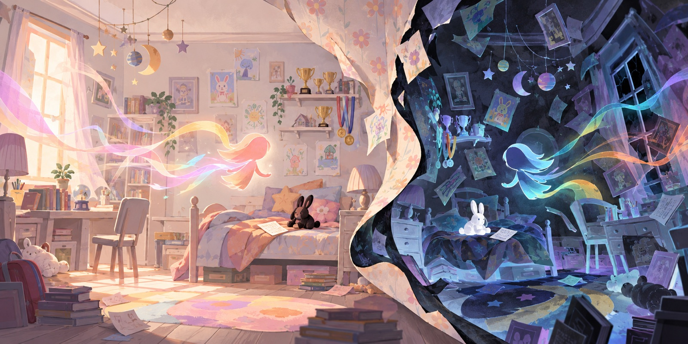

Level 1
Mom’s letter
Learn the normal room and find the first black memory object.
Playable browser game
A three-level surreal exploration game about finding memories in a childhood bedroom and questioning which version of the room is real.

Find Mom’s letter, the medal, and the stuffed animal. Each memory adds one segment to the meter, and the third level turns the room into a dark inverse of the space you learned.
Level 1
Learn the normal room and find the first black memory object.
Level 2
Search the familiar room again while the total memory score remains.
Level 3
Enter the inverse room and find the final white memory object.